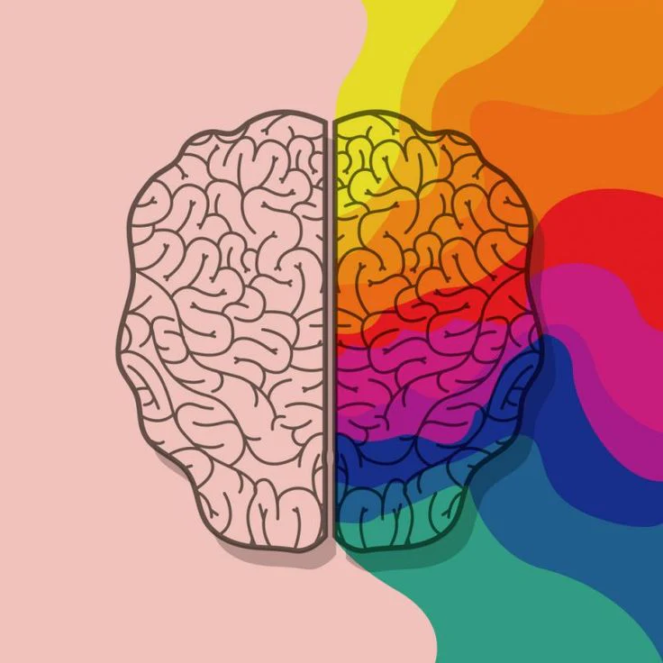

Podcast 1: "La psicología de los colores en el Diseño Web"

En este espisodio sobre la "Psicología de los colores" hablaremos sobre las sensaciones y temáticas que aportan los colores en la mente del ser humano a la hora de ser percibidos por los usuarios!
★★★★★ 4,8"Puntos que podemos tratar en el podcast:"
- Colores cálidos vs. colores fríos y cuándo usarlos.
- Sentimientos que transmiten los colores y en qué tipo de páginas se utilizan más.
- La psicología del consumidor: Estímulos para la acción. Rojo: oferta, verde: continuar.
- Cómo elegir colores que representen valores: sostenibilidad (verde), innovación (azul), energía (rojo).